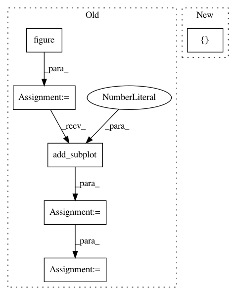

cc645b2affd6775e5a72381b48c94a1736f19503,examples/lines_bars_and_markers/fill_betweenx_demo.py,,,#,13
Before Change
x1 = np.sin(2*np.pi*y)
x2 = 1.2*np.sin(4*np.pi*y)
fig = figure()
ax1 = fig.add_subplot(311)
ax2 = fig.add_subplot(312, sharex=ax1)
ax3 = fig.add_subplot(313, sharex=ax1)
ax1.fill_betweenx(y, 0, x1)
ax1.set_ylabel("(x1, 0)")
After Change
// fill_between(y[where], x1[where], x2[where])
// because of edge effects over multiple contiguous regions.
fig, [ax, ax1] = plt.subplots(2, 1, sharex=True)
ax.plot(x1, y, x2, y, color="black")
ax.fill_betweenx(y, x1, x2, where=x2 >= x1, facecolor="green")
ax.fill_betweenx(y, x1, x2, where=x2 <= x1, facecolor="red")
In pattern: SUPERPATTERN
Frequency: 3
Non-data size: 6
Instances
Project Name: matplotlib/matplotlib
Commit Name: cc645b2affd6775e5a72381b48c94a1736f19503
Time: 2017-07-30
Author: dstansby@gmail.com
File Name: examples/lines_bars_and_markers/fill_betweenx_demo.py
Class Name:
Method Name:
Project Name: matplotlib/matplotlib
Commit Name: 12fd56236c29bb6497dd5b5f71584fc9414b3d68
Time: 2017-08-02
Author: dstansby@gmail.com
File Name: examples/lines_bars_and_markers/xcorr_acorr_demo.py
Class Name:
Method Name:
Project Name: scipy/scipy
Commit Name: 291c93ed820d042c35c8e544fc06868381439245
Time: 2014-06-29
Author: cairj3@mail2.sysu.edu.cn
File Name: scipy/cluster/tests/test_hierarchy.py
Class Name: TestDendrogram
Method Name: test_dendrogram_plot